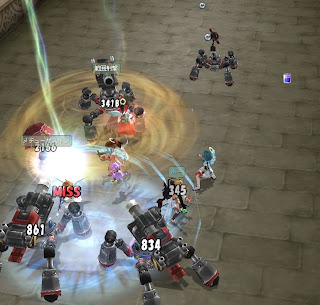
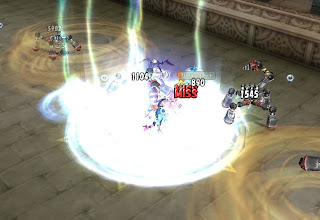

หน้า 222 จากทั้งหมด 314

โพสต์แล้ว:
พุธ 02 ก.ค. 2008 9:58 pmโดย ECO
กะจะเก็บเอนช้าน 50 แล้วกลับเอเล (-..-)a
คิดหนักเรื่องสกิลที่จะโอนไปอยู่ ที่แน่ๆเลยกะจะเอา
- speed enchant
- gravity fall
- elemental wrath
แต่ที่ลังเลอยู่จะเอาอะไรไปอีก 2 ดีระหว่าง . . .
- water aura
- earth aura
- elemental addition << ถ้าอันนี้ใช้แล้วติดใจ ใช้ได้หลายสถานการณ์ก็คิดหนัก
อยากรู้ข้อมูลเพิ่มเติมของสกิล elemental addition จังเลยว่ามันเพิ่มธาตุอะไร อย่างไร?
ซาก้า 6 คงต้องทดลอง...
:oops:
โพสต์แล้ว:
พฤหัสฯ. 03 ก.ค. 2008 9:16 amโดย ECO

วงอย่างใหญ่ ดูเอิทสตอม อยู่แค่ครึ่งเดียวของ วาท

กราวิตี้ 3000+ ร่มโดน 2000+

เลขไกลๆนั่น 3000 หรือ 5000
โพสต์แล้ว:
พฤหัสฯ. 03 ก.ค. 2008 10:00 amโดย ECO
เลขไกลนั่น 59XX ล่ะมั้ง
รีเฟลคของเชจมันไม่สะท้อนเวทสตอมนะ กระทู้เชจเคยมีคนบอกไว้
เพราะงั้นเวทลงพื้นหมู่ก็ไม่น่าจะสะท้อน
แล้วพวกกวาวิตี้ กับ วาท น่าจะจัดเป็นเวทที่สิงแล้วยิงไม่ได้
ซึ่งตรงกับเงื่อนไขที่รีเฟลคของไรเดอรมันไม่สะท้อน
โพสต์แล้ว:
พฤหัสฯ. 03 ก.ค. 2008 10:38 amโดย ECO
ถ้าจะโอนสกิว Earth Aura ก็สำคัญสำหรับ ชาแมน เพราะทำให้ถึงขึ้นมากระดับนึกเลยทีเดียว
โพสต์แล้ว:
พฤหัสฯ. 03 ก.ค. 2008 2:55 pmโดย ECO
กำลังรอว่า เอเลเมนทอลแอดดิชั่น ดีละป่าว
ตอนนี้มีโล่ธาตุครบ 4 ละ
กะเอา ออร่าน้ำออก ตอนสวิตช์
:oops:
โพสต์แล้ว:
พฤหัสฯ. 03 ก.ค. 2008 3:43 pmโดย ECO
NearS เขียน:วงอย่างใหญ่ ดูเอิทสตอม อยู่แค่ครึ่งเดียวของ วาท
กราวิตี้ 3000+ ร่มโดน 2000+
เลขไกลๆนั่น 3000 หรือ 5000
รูปแรกผมดูมะล่ายอ้ะ T T ใครเซฟไว้อัพใหม่ทีจิคับ
โพสต์แล้ว:
พฤหัสฯ. 03 ก.ค. 2008 5:58 pmโดย ECO
เวทย์พวก storm ต่างๆ ทั้งดิน น้ำ สายฟ้า ไฟ energy
โดนรีเฟกของสกายไรเดอร์สะท้อนครับ
หาก สกิวรีเฟกของเสจมีผลแบบไอ้สกายมัน
ย่อมหมายถึงสกิวพวกสตอมก็โดนสะท้อนด้วยครับ
ส่วนสกิว hit เดียวอื่นๆที่ลงพื้นในอนาคตต้องรอกันต่อไปเพื่อทดลอง
แต่ถ้ามันหลักการเดียวกันว่า ลงพื้น 1 hit แล้วสะท้อนหละก็...
มีเฮ..... :wink:
แปลกๆเหมือนเคยอ่านเจอ
ไม่รู้ทำไมถึงคิดว่าสกิวรีเฟกของเสจกับสกายไรเดอร์ มันไม่เหมือนกันหว่า...
หรือเป็นข้อมูลจากประเทศต้นตำหรับที่เขามีซาก้า 6 แล้ว
เรื่องนี้ก็แอบสงสัยอยู่นานละ แต่ยังไงก็รอซาก้า 6 นั่นหละ ได้ฟันธง :arrow:
โพสต์แล้ว:
พฤหัสฯ. 03 ก.ค. 2008 6:43 pmโดย ECO
หุ่น zen blast ก็ได้ถึง 4000 นะ ร่มได้น้อยกว่านั้นถ้ามันใส่เกราะ
ต้องรูปที่ Warth ร่ม 5000 กระทู้แถวนี้ล่ะสุดยอด =w=
โพสต์แล้ว:
ศุกร์ 04 ก.ค. 2008 12:48 amโดย ECO
อ่อเห็นภาพและครับ :lol:
โพสต์แล้ว:
ศุกร์ 04 ก.ค. 2008 9:38 pmโดย ECO
ได้เอเลบอลแล้วติดใจแฮะ
แปลงเป็น นิมฟ์ โล่ลม + ออร่าดิน ไปลากแพทตี้ ลงเอเลบอล
(เลือดลด 20% เลยอ่า :cry: )
โพสต์แล้ว:
ศุกร์ 04 ก.ค. 2008 10:42 pmโดย ECO
เป็ดน้อย เขียน:ได้เอเลบอลแล้วติดใจแฮะ
แปลงเป็น นิมฟ์ โล่ลม + ออร่าดิน ไปลากแพทตี้ ลงเอเลบอล
(เลือดลด 20% เลยอ่า :cry: )
แล่วก้อยังติดใจเนาะ 55+
โพสต์แล้ว:
ศุกร์ 04 ก.ค. 2008 10:45 pmโดย ECO
N' ปริ้นนน เขียน:เป็ดน้อย เขียน:ได้เอเลบอลแล้วติดใจแฮะ
แปลงเป็น นิมฟ์ โล่ลม + ออร่าดิน ไปลากแพทตี้ ลงเอเลบอล
(เลือดลด 20% เลยอ่า :cry: )
แล่วก้อยังติดใจเนาะ 55+
มันสนุกดีอ่ะ
เอาไปลงเวลาเจอ พวกโดมิเนียนดันใต้ชั้น 3

hock:
โพสต์แล้ว:
อาทิตย์ 06 ก.ค. 2008 1:14 pmโดย ECO
อีเอ๊กพี x2 กะลังมา
ใครที่อยู่เอเล รีบกลับมาเอนช้านแล้วเวลให้ตัน 40 เข้านะ !!~
:lol:
โพสต์แล้ว:
อาทิตย์ 06 ก.ค. 2008 1:16 pmโดย ECO
คงจะจ็อบอัพกันระนาว
แต่นู๋สอบอ่ะ :oops: :cry:
โพสต์แล้ว:
จันทร์ 07 ก.ค. 2008 10:24 amโดย ECO
ได้เวลาจะมีเธคเป็นของตัวเองล่ะเอิ้กๆ